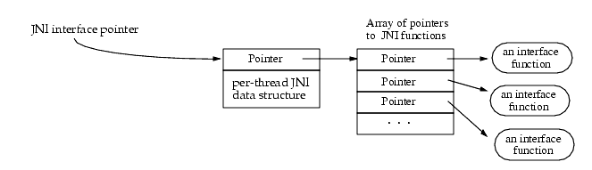

JNI(Java Native Interface)
通过使用 Java本地接口书写程序，可以确保代码在不同的平台上方便移植。
JNI接口指针，是一个指向指针的指针。

JNI 接口指针，只在当前线程中有效。因此，本地方法不能在线程间传递JNI接口指针。
虚拟机保证在同一个Java线程中多次调用本地方法时会传递给本地方法同一个JNI接口指针，但不同Java线程调用本地方法可能会接收到不同的JNI接口指针。
Java VM是多线程的，本地库编译和连接时需要注意多线程事项。比如对于GNU gcc 编译，需要指定-D_REENTRANT等。
The VM internally maintains a list of loaded native libraries for each class loader.
- A native library may be statically linked with the VM. The manner in which the library and VM image are combined is implementation dependent. A System.loadLibrary or equivalent API must succeed for this library to be considered loaded.
- A library L whose image has been combined with the VM is defined as statically linked if and only if the library exports a function called JNI_OnLoad_L.
- If a statically linked library L exports a function called JNI_OnLoad_L and a function called JNI_OnLoad, the JNI_OnLoad function will be ignored.
- If a library L is statically linked, then upon the first invocation of System.loadLibrary("L") or equivalent API, a JNI_OnLoad_L function will be invoked with the same arguments and expected return value as specified for the JNI_OnLoad function.
- A library L that is statically linked will prohibit a library of the same name from being loaded dynamically.
- When the class loader containing a statically linked native library L is garbage collected, the VM will invoke the JNI_OnUnload_L function of the library if such a function is exported.
- If a statically linked library L exports a function called JNI_OnUnLoad_L and a function called JNI_OnUnLoad, the JNI_OnUnLoad function will be ignored.
VM
所有的线程都是Linux线程，由内核统一调度。它们通常从Java中启动（如使用new Thread().start()），也可以在其他任何地方创建，然后连接（attach）到JavaVM。
例如，一个用pthread_create启动的线程能够使用JNI AttachCurrentThread 或 AttachCurrentThreadAsDaemon函数连接到JavaVM。在一个线程成功连接（attach）之前，它没有JNIEnv，不能够调用JNI函数。
连接一个Native创建的线程会触发构造一个java.lang.Thread对象，然后其被添加到主线程群组（main ThreadGroup），以让调试器可以检测到。对一个已经连接的线程使用AttachCurrentThread不做任何操作（no-op）。
创建JVM，涉及到第三方jar包时，通过"-Djava.class.path=
当在一个线程里面调用AttachCurrentThread后，如果不需要用的时候一定要DetachCurrentThread，否则线程无法正常退出。
Creating the VM
- JNI_CreateJavaVM 函数加载和初始化JavaVM，返回指向JNI接口指针的指针。调用JNI_CreateJavaVM的线程认为是主线程。
Attaching to the VM
- 每个线程多次AttachCurrentThread获取的JNIEnv指针是一样，但是不同线程Attach之后获取到的JNIEnv的指针不一样；
- Attached的线程应该有足够的栈空间；
- Attached到VM的线程，其上下文类加载器是bootstrap加载器。
Detaching from the VM
- DetachCurrentThread函数；
Unloading the VM
- JNI_DestroyJavaVM() 函数；
当在系统中调用System.loadLibrary函数时，该函数会找到对应的动态库，然后首先试图找到"JNI_OnLoad"函数，如果该函数存在，则调用它。
JNI_OnLoad可以和JNIEnv的registerNatives函数结合起来，实现动态的函数替换。
Java和C++类型映射
| Java 类型 | 本地类型 | 描述 |
|---|---|---|
| boolean | jboolean | C/C++8位整型 |
| byte | jbyte | C/C++带符号的8位整型 |
| char | jchar | C/C++无符号的16位整型 |
| short | jshort | C/C++带符号的16位整型 |
| int | jint | C/C++带符号的32位整型 |
| long | jlong | C/C++带符号的64位整型e |
| float | jfloat | C/C++32位浮点型 |
| double | jdouble | C/C++64位浮点型 |
| Object | jobject | 任何Java对象，或者没有对应java类型的对象 |
| Class | jclass | Class对象 |
| String | jstring | 字符串对象 |
| Object[] | jobjectArray | 任何对象的数组 |
| boolean[] | jbooleanArray | 布尔型数组 |
| byte[] | jbyteArray | 比特型数组 |
| char[] | jcharArray | 字符型数组 |
| short[] | jshortArray | 短整型数组 |
| int[] | jintArray | 整型数组 |
| long[] | jlongArray | 长整型数组 |
| float[] | jfloatArray | 浮点型数组 |
| double[] | jdoubleArray | 双浮点型数组 |
常用的函数：
- jclass FindClass`(const char* clsName)：通过类的名称(类的全名，这时候包名不是用.号，而是用/来区分的)来获取jclass；
- jclass GetObjectClass(jobject obj)：通过对象实例来获取jclass，相当于java中的getClass方法；
- jclass GetSuperClass(jclass obj)：通过jclass可以获取其父类的jclass对象；
- GetFieldID，GetMethodID，GetStaticFieldID，GetStaticMethodID等
JNIEnv
JNIEnv类型实际上代表了Java环境，通过这个JNIEnv* 指针，就可以对Java端的代码进行操作。例如创建Java类中对象，调用Java对象的方法，获取Java对象中的属性等等。
JNIEnv的指针会被JNI传入到本地方法的实现函数中来对Java端的代码进行操作。
Method
一、对象操作
1. jobject AllocObject(jclass clazz)
说明：不调用构造方法创建实例
参数：
- clazz：指定对象的类
2. jobject NewObject(jclass clazz, jmethodID methodID, …)
jobject NewObjectA(jclass clazz, jmethodID methodID, jvalue* args)
jobject NewObjectV(jclass clazz, jmethodID methodID, va_list args)
说明：使用指定的构造方法创建类的实例，唯一不同的是输入参数的传入形式不同
参数：
- clazz：指定对象的类
- methodID：指定的构造方法
- args：输入参数列表
3. jclass GetObjectClass(jobject obj)
说明：根据对象获取所属类
参数：
- obj：某个 Java 对象实例，不能为 NULL
4. jobjectRefType GetObjectRefType(jobject obj)
说明：获取到对象的引用类型，JNI 1.6 新增的方法
参数：
- obj：某个 Java 对象实例
返回：
- JNIInvalidRefType = 0 // 该 obj 是个无效的引用
- JNILocalRefType = 1 // 该 obj 是个局部引用
- JNIGlobalRefType = 2 // 该 obj 是个全局引用
- JNIWeakGlobalRefType = 3 // 该 obj 是个全局的弱引用
二、方法操作
1. jmethodID GetMethodID(jclass clazz, const char name, const char sig)
说明：获取类中某个非静态方法的ID
参数：
- clazz：指定对象的类
- name：这个方法在 Java 类中定义的名称，构造方法为 ““
- sig：这个方法的类型描述符，例如 “()V”，其中括号内是方法的参数，括号后是返回值类型
示例：
Java 的类定义如下：
package com.afei.jnidemo;
class Test {
public Test(){}
public int show(String msg, int number) {
System.out.println("msg: " + msg);
System.out.println("number: " + number);
return 0;
}
}
JNI 调用如下：
jclass clazz = env->FindClass("com/afei/jnidemo/Test");
jmethodID constructor_method = env->GetMethodID(clazz, "<init>", "()V");
jmethodID show_method=env->GetMethodID(clazz,"show", "(Ljava/lang/String;I)I");
签名时其中括号内是方法的参数，括号后是返回值类型。例如 show 方法，第一个参数是 String 类，对应 Ljava/lang/String;（注意后面有一个分号），第二个参数是 int 基本类型，对应的类型描述符是 I，返回值也是 int，同样是 I，所以最终该方法的签名为 (Ljava/lang/String;I)I。
2. NativeType CallMethod(jobject obj, jmethodID methodID, …)
NativeType CallMethodA(jobject obj, jmethodID methodID, jvalue* args)
NativeType CallMethodV(jobject obj, jmethodID methodID, va_list args)
说明：调用对象的某个方法，唯一不同的是输入参数的传入形式不同，这里 type 表示的是一系列方法。
参数：
- obj：某个 Java 对象实例
- methodID：指定方法的ID
- args：输入参数列表
示例：
jclass clazz = env->FindClass("com/afei/jnidemo/Test");
jmethodID show_method = env->GetMethodID(clazz, "show", "(Ljava/lang/String;I)I");
jint result = env->CallIntMethod(clazz, show_method, "Hello JNI!", 0);
3. jmethodID GetStaticMethodID(jclass clazz, const char name, const char sig)
说明：同 GetMethodID，只不过操作的是静态方法
4. NativeType CallStaticMethod(jclass clazz, jmethodID methodID, …)
NativeType CallStaticMethodA(jclass clazz, jmethodID methodID, jvalue* args)
说明：同 NativeType CallMethod，只不过操作的是静态方法，参数也由 jobject 变成了 jclass。
三、字符串操作
1. jstring NewString(const jchar* unicodeChars, jsize len)
说明：以 UTF-16 的编码方式创建一个 Java 的字符串（jchar 的定义为 uint16_t）
参数：
- unicodeChars：指向字符数组的指针
- len：字符数组的长度
2. jstring NewStringUTF(const char* bytes)
说明：以 UTF-8 的编码方式创建一个 Java 的字符串
参数：
- bytes：指向字符数组的指针
3. jsize GetStringLength(jstring string)
jsize GetStringUTFLength(jstring string)
说明：获取字符串的长度，GetStringLength 是UTF-16 编码，GetStringUTFLength 是 UTF-8 编码
参数：
- string：字符串
4. const jchar GetStringChars(jstring string, jboolean isCopy)
const char GetStringUTFChars(jstring string, jboolean isCopy)
说明：将 Java 风格的 jstring 对象转换成 C 风格的字符串，同上一个是 UTF-16 编码，一个是 UTF-8 编码
参数：
- string：Java 风格的字符串
- isCopy：是否进行拷贝操作，0 为不拷贝
5. void ReleaseStringChars(jstring string, const jchar* chars)
void ReleaseStringUTFChars(jstring string, const char* utf)
说明：释放指定的字符串指针，通常来说，Get 和 Release 是成对出现的
参数：
- string：Java 风格的字符串
- chars/utf：对应的 C 风格的字符串
四、数组操作
1. jobjectArray NewObjectArray(jsize length, jclass elementClass, jobject initialElement)
说明：创建引用数据类型的数组
参数：
- length：数组的长度
- elementClass：数组的元素所属的类
- initialElement：使用什么样的对象来初始化，可以选择 NULL
2. jsize GetArrayLength(jarray array)
说明：获取数组的长度 参数：
- array：指定的数组对象。jarray 是 jbooleanArray、jbyteArray、jcharArray 等的父类。
3. jobject GetObjectArrayElement(jobjectArray array, jsize index)
说明：获取引用数据类型数组指定索引位置处的对象
参数：
- array：引用数据类型数组
- index：目标索引值
4. void SetObjectArrayElement(jobjectArray array, jsize index, jobject value)
说明：设置引用数据类型数组指定索引位置处的值
参数：
- array：需要设置的引用数据类型数组
- index：目标索引值
- value：需要设置的值
5. NativeType GetArrayElements(ArrayType array, jboolean isCopy)
说明：获取基本数据类型数组的头指针
参数：
- array：基本数据类型数组
- isCopy：是否进行拷贝操作，0 为不拷贝
6. void ReleaseArrayElements(ArrayType array, NativeType* elems, jint mode)
说明：释放基本数据类型数组指针。通常来说，Get 和 Release 是成对出现的
参数：
- array：基本数据类型数组
- elems：对应的 C 风格的基本数据类型指针
- mode：释放模式，通常我们都是使用 0
7. void GetArrayRegion(ArrayType array, jsize start, jsize len, NativeType* buf)
说明：返回基本数据类型数组的部分副本。
参数：
- array：基本数据类型数组
- start：起始的索引值
- len：拷贝的长度
- buf：拷贝到的目标数组
8. void SetArrayRegion(ArrayType array, jsize start, jsize len, const NativeType* buf)
说明：设置基本数据类型数组元素。类型和上面的表类似。
参数：
- array：需要设置的基本数据类型数组
- start：起始的索引值
- len：需要设置的 buf 的长度
- buf：需要设置的值数组
References
JNI 支持3中不透明的引用：局部(local)引用、全局(global)引用和弱全局引用。
- 局部和全局引用，有着各自不同的生命周期。局部引用能够被自动释放，而全局引用和弱全局引用在被程序员释放之前，是一直有效的。
- 一个局部或者全局引用，使所提及的对象不能被垃圾回收。而弱全局引用，则允许提及的对象进行垃圾回收。
- 不是所有的引用都可以在所有上下文中使用的。例如：在一个创建返回引用native方法之后，使用一个局部引用，这是非法的。
局部引用失效，有两种方式：
1）系统会自动释放局部变量。
2）程序员可以显示地管理局部引用的生命周期，例如调用DeleteLocalRef
注意事项：
- 局部对象只属于创建它们的线程，只在该线程中有效。一个线程想要调用另一个线程创建的局部引用是不被允许的。
- Java传递给本地方法的对象是局部引用；
- 所有JNI函数返回的Java对象是局部引用；
- 本地方法返回给VM可能是局部或全局引用；
基本数据类型是不需要释放，如 jint , jlong , jchar 等等。
需要释放的是引用数据类型，当然也包括数组。如：jstring, jobject, j***Array, jclass，jmethodID等。
局部引用只有当本地函数返回Java（当Java调用native）或调用线程detach JVM（native调用Java）时才会被GC，因此，当有长时间运行的本地函数或者创建很多局部引用时需要调用DeleteLocalRef进行引用删除。
对于C++ call Java时创建的global reference和local reference 创建，需要定义其释放之处；
注：HotSpotVM：-XX:MaxJNILocalCapacity flag (default: 65536)。当前没有测试出来，Local references 溢出的情况；(JDK 8)
Exception
本地代码中调用某个JNI接口时如果发生了异常，后续的本地代码不会立即停止执行，而会继续往下执行后面的代码。
// 如果这里出现问题，则会出现问题，后续执行异常
jauthority = env.newStringUTF(authority, "authority");
env->DeleteLocalRef(jauthority);
JNI提供了两种检查异常的方法：
- 检查上一次 JNI函数调用的返回值是否为NULL。
- 通过调用JNI函数ExceptionOccurred()来判断是否发生异常。
如果发生了异常，本地方法再调用其它JNI调用时必须先清除异常信息。
libhdfs中封装jnienv的函数，并且对函数进行异常检查，返回errorno，并且使用goto的方式，进行统一释放。
jthr = env.newStringUTF(scheme, "scheme", &jscheme);
if (jthr ) { goto done;}
jthr = env.newStringUTF(authority, "authority", &jauthority);
if (jthr ) { goto done;}
jthr = env.newStringUTF(path, "path", &jpath);
if (jthr ) { goto done;}
retObj = env.newObject("alluxio/AlluxioURI",
"(Ljava/lang/String;Ljava/lang/String;Ljava/lang/String;)V", jscheme, jauthority, jpath);
done:
env->DeleteLocalRef(jscheme);
env->DeleteLocalRef(jauthority);
env->DeleteLocalRef(jpath);
After an exception has been raised, the native code must first clear the exception before making other JNI calls. When there is a pending exception, the JNI functions that are safe to call are:
-
ExceptionOccurred、ExceptionDescribe、ExceptionClear、ExceptionCheck、ReleaseStringChars、ReleaseStringUTFChars
-
ReleaseStringCritical、Release
ArrayElements、ReleasePrimitiveArrayCritical、DeleteLocalRef、DeleteGlobalRef、 -
DeleteWeakGlobalRef、MonitorExit、PushLocalFrame、PopLocalFrame
Demo
Java Call C/C++
流程：
- 类
com.test.JNIDemo定义一个方法，该方法是在C/C++中实现
package com.test;
public class JNIDemo {
//定义一个方法，该方法在C中实现
public native void testHello();
public static void main(String[] args){
//加载C文件，或 System.load("Library Absoulte Path");
System.loadLibrary("TestJNI");
JNIDemo jniDemo = new JNIDemo();
jniDemo.testHello();
}
}
-
编译java文件，生成class文件；
-
生成对用的
JniDemo.h文件:
- 生成动态链接库
# Windows下：
gcc -shared JNIDemo.c -o JNIDemo.dll
# Linux 下：
gcc -shared -fPIC -D_REENTRANT -I${JAVA_HOME}/include/linux -I${JAVA_HOME}/include -I/home/wjp/4C/4JNI/demo1/ JNIDemo.c -o libJNIDemo.so
# Mac 下：
gcc -dynamiclib JNIDemo.c -o JNIDemo.jnilib
- 将C/C++库文件添加到PATH中（可选），然后执行java程序即可。
jobject obj的解释:
-
如果native方法不是static的话，这个obj就代表这个native方法的类实例；
-
如果native方法是static的话，这个obj就代表这个native方法的类的class对象实例(static方法不需要类实例的，所以就代表这个类的class对象)；
C/C++ Call Java Demo
- 需要指定jni.h的头文件路径，通过 -I 选项加在gcc/g++；
#include<jni.h>
char* jstringtochar(JNIEnv *env, jstring jstr ) {
char* rtn = NULL;
jclass clsstring = env->FindClass("java/lang/String");
jstring strencode = env->NewStringUTF("utf-8");
jmethodID mid = env->GetMethodID(clsstring, "getBytes", "(Ljava/lang/String;)[B");
jbyteArray barr= (jbyteArray)env->CallObjectMethod(jstr, mid, strencode);
jsize alen = env->GetArrayLength(barr);
jbyte* ba = env->GetByteArrayElements(barr, JNI_FALSE);
if (alen > 0) {
rtn = (char*)malloc(alen + 1);
memcpy(rtn, ba, alen);
rtn[alen] = 0;
}
env->ReleaseByteArrayElements(barr, ba, 0);
return rtn;
}
JNIEXPORT jintArray JNICALL Java_com_example_arrtoc_MainActivity_arrEncode
(JNIEnv *env, jobject obj, jintArray javaArr){
//获取Java数组长度
int lenght = (*env)->GetArrayLength(env,javaArr);
//根据Java数组创建C数组，也就是把Java数组转换成C数组
// jint* (*GetIntArrayElements)(JNIEnv*, jintArray, jboolean*);
int* arrp =(*env)->GetIntArrayElements(env,javaArr,0);
//新建一个Java数组
jintArray newArr = (*env)->NewIntArray(env,lenght);
//把数组元素值加10处理
int i;
for(i =0 ; i<lenght;i++){
*(arrp+i) +=10;
}
//将C数组种的元素拷贝到Java数组中
(*env)->SetIntArrayRegion(env,newArr,0,lenght,arrp);
return newArr;
}
-
通过
-Lpath -ljvm，运行时还需要加载链接库路径； -
将
$JAVA_HOME/jre/lib/amd64/server路径添加到PATH（可以搜索到链接库的地址）
注意
Java调用C++再调用Java
在java调用C++代码时在C++代码中调用了AttachCurrentThread方法来获取JNIEnv，此时JNIEnv已经通过参数传递进来，不需要再次AttachCurrentThread来获取。在释放时就会报错。
void cpp2jni(int msg){
JNIEnv *env = NULL;
int status;
bool isAttached = false;
status = jvm->GetEnv((void**)&env, JNI_VERSION_1_4);
if (status < 0) {
if (jvm->AttachCurrentThread(&env, NULL))将当前线程注册到虚拟机中
{
return;
}
isAttached = true;
}
//实例化该类
jobject jobject = env->AllocObject(global_class);//分配新 Java 对象而不调用该对象的任何构造函数。返回该对象的引用。
//调用Java方法
(env)->CallVoidMethod(jobject, mid_method,msg);
if (isAttached) {
jvm->DetachCurrentThread();
}
}
Java调用C++时的异常处理
测试场景：Java使用线程池，启动10个线程，其中一个线程通过JNI调用c++程序：
- 如果c++中没有处理异常，那么会导致jvm的崩溃；
- 如果c++中正确处理了异常，则jvm可以正常运行；
- c++中如果不是异常的错误，如数组越界，则无法try-catch捕获，JVM会崩溃。